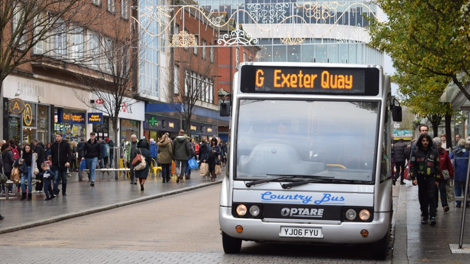
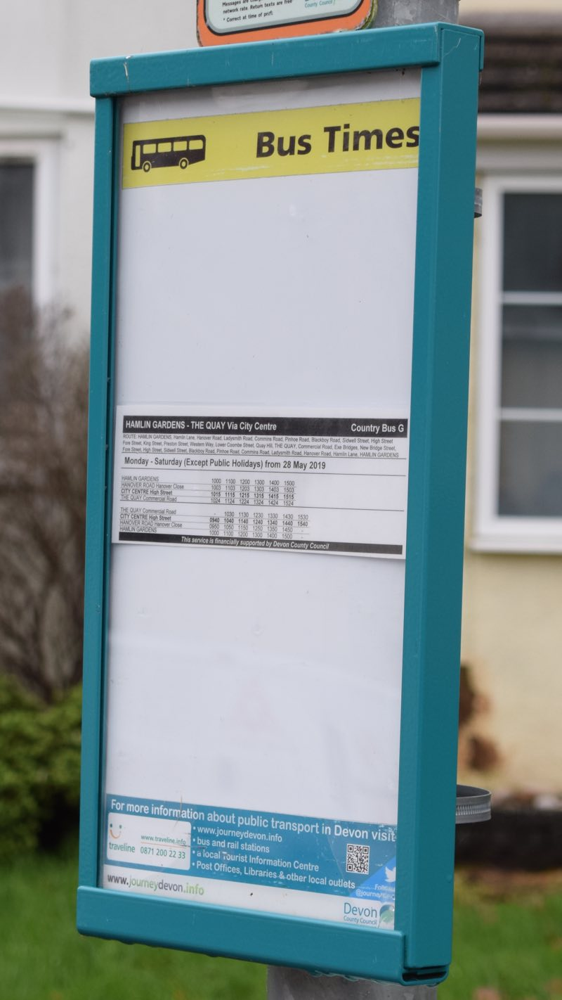
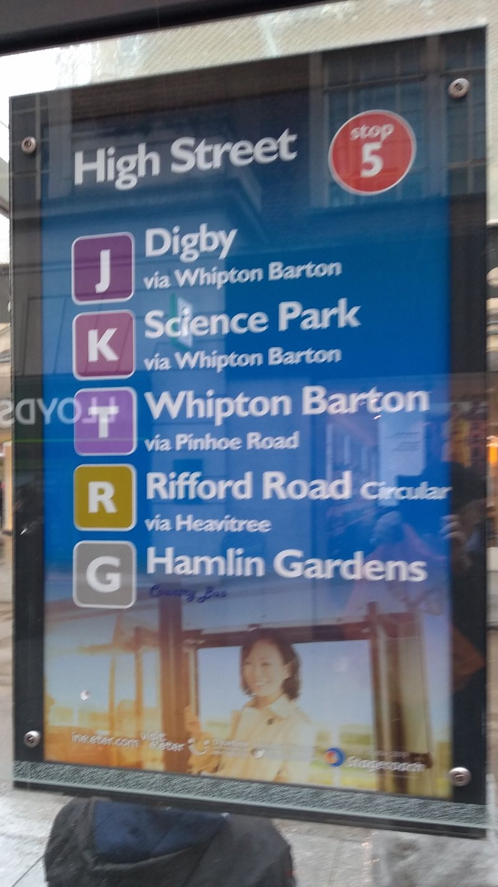
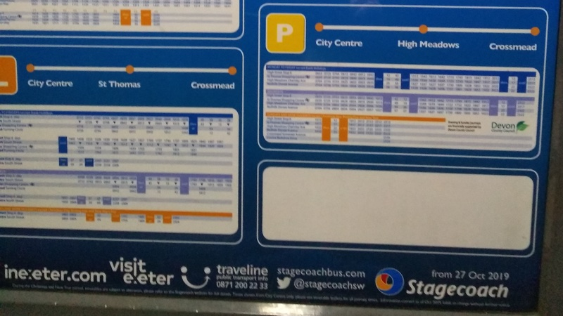

Exeter’s G bus service runs between Polsloe and the quay via the city centre. Passenger numbers are not high, the main users being residents of the Polsloe area and the Shillhay estate by the river. Operating the service is not a viable commercial proposition, so it is provided under a contract subsidised by Devon County Council.
In May 2019 Country Bus replaced Stagecoach as the G service operator following a competitive tendering exercise. Information from the county council shows that there were two bidders, that Country Bus won on price and that the service is now costing the taxpayer £21,950 per year.
The service seems to run reliably and to time. Country Bus uses a minibus to provide the service, as did Stagecoach, although the author’s personal experience suggests that the seats are now harder than they were. The timetable remains the same: six trips at hourly intervals each way between 09:30 and 15:30.
Many passengers know each other, evoking a sense of local community more commonly found on rural buses. The county council told Exeter Observer that it had received “very positive” feedback from passengers since Country Bus took over.
It is the provision of service information at bus stops that has been adversely affected by the change of operator, making the G service more difficult to use and undermining its integration with the rest of Exeter’s bus network.
 Country Bus G service to Exeter Quay
To be viable for use by anyone other than regular passengers, a bus stop must show which buses stop there and provide timetable information for each of those services.
In Exeter city centre, where most stops have shelters, timetable information is shown in one panel while the routes served by the stop are shown variously in others, either on the reverse of the timetable information, or on flags fixed to a post or the roof of a shelter. At High Street stops the service numbers are shown on shelter roofs, rather than flags.
A few electronic panels which show live times for all bus services, and the stops from which they depart, are located on the High Street and at the top of Fore Street. Stagecoach also produces timetable leaflets for its own services which are available at libraries, the tourist information centre and at the Stagecoach office in the bus station. Its app provides real-time service and other information.
Route maps and “where to find your bus” guides are also on offer, but Devon County Council’s otherwise comprehensive timetable booklets for district council areas do not cover Exeter.
Responsibilities for providing information at bus stops vary. The city centre bus stop displays including summary posters, maps and flags are produced, maintained and paid for by Stagecoach as the principal operator of services in the area. The electronic real-time displays are maintained by the county council using vehicle location data supplied by the bus companies.
Outside the city centre Stagecoach provides information at stops on its own routes at its discretion. Where Stagecoach does not serve a particular stop and the route is supported by the county council because it is not commercially viable, as is the case with the G service, Devon County Council supplies and maintains bus stop information.
Yet not all bus stops outside the city centre carry timetable information or indeed any information at all. A recent survey of the G route’s eastern section between Blackboy Road and Polsloe found an information display case at only one stop: the Hamlin Gardens terminus.
 Hamlin Gardens bus stop information display case
Some city centre G service stops either fail to display the G timetable, or indicate that the G stops there, or both. The distribution of information is inconsistent. Devon County Council undertook to work with Stagecoach to improve matters in July after which a few helpful changes took place, but many gaps remain.
At the city end of Sidwell Street (stop 18) there is a small timetable on the inside of the shelter and a flag, but the G does not have an entry on the route list. Its corresponding stop in the opposite direction (stop 25) shows a route list and a flag but no timetable. This is also the state of affairs at stops 5 and 6 on the High Street.
Stops 24 and 29 at the Odeon end of Sidwell Street show the G on the route list but not on the flag, and there is no timetable information.
At the same time, G services are not shown on the electronic real-time departure screens in the High Street and Fore Street.
When asked about the missing screen information in July, Devon County Council said: “The database is currently in transition, involving a change in the company processing the data for us. This situation coincides with but is not related to the change on service G. Country Bus are fully equipped to enable real time monitoring of their buses, so when the data supply issue is fully resolved, the G should appear on the screens.”
More than four months later the database still appears to be in transition and the county council is not responding to requests for an update.
 Exeter High Street stop 5 route list
In addition, the G service does not appear on the Stagecoach-produced Exeter route maps, and so does not show up in the Where to find your bus guide. Anyone looking at the Stagecoach maps would not not know that a service exists along the G route.
G service timetable leaflets are no longer available from the usual outlets, and while the county council’s interactive bus map does show the route, albeit as still operated by Stagecoach, it is near-impossible to use on a mobile phone.
The upshot is that the G bus service is largely invisible, particularly to visitors who might otherwise find it very useful for reaching the quayside, an important Exeter leisure destination.
Stagecoach might reasonably argue that it is not legally obliged to provide information about other companies’ bus services. Yet its near-monopoly position in Exeter does imply a responsibility to help passengers find their way round the whole city network.
To some extent Stagecoach accepts this, since it does include partial information about the G service at its stops, and even provides a blank space on its timetable panels for another service timetable to be inserted.
However Country Bus appears content not to display timetable information even at some stops where space is provided for it to do so.
 A Stagecoach timetable panel with a blank space supplied for Country Bus service information
Devon County Council’s Devon and Torbay Local Transport Plan 2011-2026 states that it seeks to provide an “integrated public transport service”. A specific promise in the transport plan is that “waiting facilities such as bus stops will be maintained and offer safe, secure places to wait and provide the customer with accurate travel information.”
Anyone looking at the county council’s website might be forgiven for a degree of scepticism about its commitment to public transport. The relevant section is headed Roads and Transport as if roads existed as entities in their own right without being part of a transport system. Transport planning information is presented as a sub-section of Traffic information. And Devon County Council continues to spend almost all of its strategic transport budget on roads.
The division of transport responsibilities in Conservative-led Devon County Council may be responsible for maintaining this outmoded approach. Transport is included in the briefs of no fewer than three county cabinet members: Councillor Stuart Hughes is responsible for highways, Councillor Andrea Davis for infrastructure schemes and Councillor Roger Croad for infrastructure strategy and transport services in the community.
The county council’s chief executive confirmed this dilution of powers: “No cabinet member has overall responsibility for transport. The Cabinet works as a team to ensure co-ordination.”
 The back end of the Country Bus G service to Exeter Quay
The back end of the Country Bus G service to Exeter Quay
There is little evidence that this team-working extends to thinking creatively about opportunities for improving bus services. The idea of taking steps to increase use of services such as the G, and so increase the value of their public subsidy, does not appear to be on the agendas of either Country Bus or Devon County Council.
Worse, when Councillor Yvonne Atkinson, the Labour chair of the county council’s Exeter highways committee, asked what scope the administration saw for taking advantage of the new powers and opportunities presented by the Bus Services Act 2017 at at a meeting on 24 May 2018, the response from Councillor Croad was, in brief, none.
He and his colleagues might usefully consider the Campaign for Better Transport’s excellent guidance on using the act to improve local bus services in preparing their (delayed) Exeter Transport Strategy update.
Meanwhile, Devon County Council could put into practice the fine words in its existing local transport plan about travel information at bus stops. It currently does not make use of procurement contracts to require the operators of subsidised bus routes to provide timetable and service information at bus stops: changing this would be a good start.
Stagecoach and Country Bus were invited to comment on the issues raised in this article. Neither company responded.